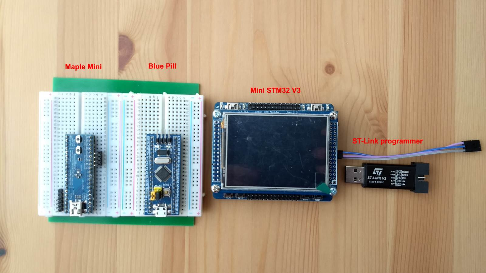

Years ago, I took the blue pill and woke up from the matrix. After battling the deadly
bootloading bots, I plugged myself back into the matrix. It became too hard
to ignore the sensuous siren call of the ATMEGA328P libraries. Time passed and ST officially took
over the
Arduino Core development from
Roger Clark so I decided to see if the bootloading bots are still present in the new core with my
STM32 boards.

Installation
Start Arduino IDE and edit Preferences:
File -> Preferences : Additional Boards Managers URLs:
https://github.com/stm32duino/BoardManagerFiles/raw/master/STM32/package_stm_index.json
Tools -> Board -> Boards Manager
Once installed, the STM32 board configurations will be available in the IDE eg:
You will also need to install STM32CubeProgrammer(which needs Java 8) from ST. In addition, purchase a
ST-Link V3 Mini programmer. In order to install a HID bootloader into the board, use the
ST-Link programmer to burn it. I managed to program the bootloader into the Maple Mini and Blue
Pill after a lot of fiddling around but the Mini STM32 V3 did not work. The steps are:
- Download HID bootloaders from here.
- run STM32CubeProgrammer
Connect to ST-Link V3 programmer
Perform Full chip erase
Select an appropriate HID bootloader and program the chip.
- Power cycle the STM32 board. The builtin LED should start blinking rapidly. This indicates the
bootloader is waiting to accept a sketch for the first time.
- Upload the Blink sketch.
> Trying to open the [COM19]...
> Unable to open the [COM19]
> Searching for [1209:BEBA] device...
#
> [1209:BEBA] device is found !
> Sending command...
> Flashing firmware...
.
If it hangs at this point, upload again.
If it succeeds, the output looks like:
> Trying to open the [COM19]...
> Toggling DTR...
> Searching for [1209:BEBA] device...
##
> [1209:BEBA] device is found !
> Sending command...
> Flashing firmware...
. 1024 Bytes
. 2048 Bytes
. 3072 Bytes
. 4096 Bytes
. 5120 Bytes
. 6144 Bytes
. 7168 Bytes
. 8192 Bytes
. 9216 Bytes
. 10240 Bytes
. 11264 Bytes
. 12288 Bytes
. 13312 Bytes
. 14336 Bytes
. 15360 Bytes
. 16384 Bytes
. 17408 Bytes
. 18432 Bytes
. 19456 Bytes
. 20480 Bytes
> Done!
> Sending command...
> Error while sending command.
> Searching for [COM19] ...
> [COM19] is found !
> Finish
Once the first sketch uploads successfully, a virtual COM port will be created for the
bootloader. Select this port in the Tools menu. From now on, sketches will upload
as per normal.
Be prepared to have multiple tries at programming the bootloader before it works. You may
also need to uninstall old unused COM ports from Windows as the bootloader may mistakenly
associate it as its virtual serial port. This was where I previously gave up went back into the matrix again.
Instead of the HID bootloader, you can upload using the ST-Link programmer which always works. You need to connect to
SWDIO, SWDCLK, GND on the board and use the SWD upload method.
The STM32 boards are much faster, have more GPIOs and are cheaper than the Atmel ATMEGA328P boards
but API libraries may not be available. Check before committing to the STM32 for your project.
You can always port or suggest the API author port it to the STM32 platform though.